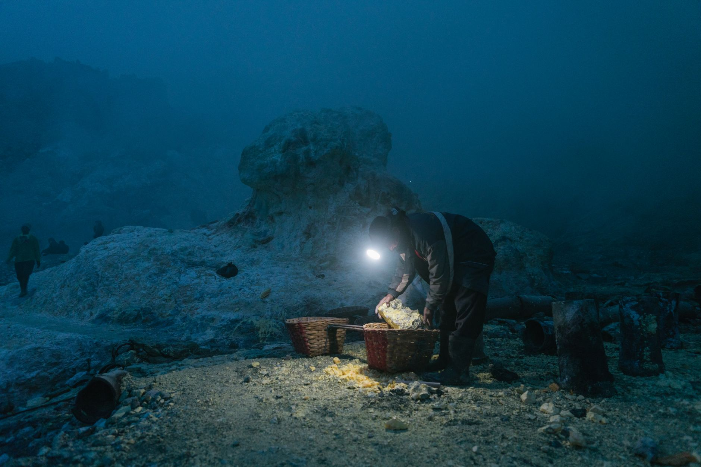

분쟁광물 탄탈, 아동노동 실태 재조명…공급망 투명성 압박

콩고민주공화국(DRC) 동부 광산 지역에서 채굴되는 탄탈럼(탄탈, Tantalum)이 '분쟁광물'로 재조명되고 있다. 최근 언론 보도를 통해 현지 광산에서 어린이와 청소년들이 劣악한 환경에서 일하는 실태가 다시 알려지면서 국제 사회의 공분을 사고 있다.
탄탈럼은 스마트폰·노트북·전기차 배터리 등 첨단 전자기기에 없어서는 안 될 소재다. 전기를 저장하는 소형 커패시터(축전기) 제조에 주로 쓰이며, 전 세계 수요의 상당 부분이 DRC를 비롯한 중앙아프리카 지역에서 충당된다.
DRC는 전 세계 탄탈럼 생산량의 약 40%를 차지하는 최대 산지다. 그러나 동부 지역 광산 상당수는 무장 세력의 통제 아래 있어 채굴 수익이 분쟁 자금으로 활용된다는 의혹을 받아왔다. 유엔(UN)은 이들 광물을 '분쟁광물'로 공식 분류하고 있다.
현지 인권 단체들의 조사에 따르면, 일부 탄탈럼 광산에서 10대 미만 어린이를 포함한 미성년자가 하루 8시간 이상 채굴 작업에 투입되는 것으로 나타났다. 이들은 최저 생계 수준에 못 미치는 임금을 받으며 안전장비조차 갖추지 못한 채 일하고 있다.
이 같은 문제는 어제오늘의 일이 아니지만, 최근 콩고 광산 붕괴 사고로 희귀금속 공급망이 다시 도마에 오르면서 윤리적 조달 문제가 재차 부각되고 있다. 글로벌 테크 기업들이 DRC산 광물을 사용하고 있다는 사실이 소비자와 투자자들의 비판을 받고 있다.
애플·인텔·테슬라 등 주요 기업들은 분쟁광물 사용 근절을 위한 내부 감사 및 공급망 실사를 강화하고 있다고 밝히고 있다. 그러나 전문가들은 다단계 하청 구조로 얽힌 광물 공급망의 특성상 실질적인 추적과 검증이 매우 어렵다고 지적한다.
국제 인권 단체 관계자는 '탄탈럼 한 조각이 어린이의 피땀으로 채굴돼 수만 킬로미터를 이동해 스마트폰 속에 담긴다는 사실을 소비자들이 인식해야 한다'며 '기업들의 자발적 선언만으로는 한계가 있고 강제적인 제3자 검증 체계가 필요하다'고 강조했다.
유럽연합(EU)은 2021년부터 분쟁광물 규정(EU Conflict Minerals Regulation)을 시행해 역내 수입업자가 탄탈럼·주석·텅스텐·금 등의 원산지와 조달 경로를 의무적으로 공개하도록 하고 있다. 미국도 도드-프랭크법 1502조를 통해 분쟁광물 공시를 요구한다.
한국은 삼성전자·SK하이닉스·LG전자 등 대형 전자 기업이 탄탈럼을 사용하는 전자부품을 대량 구매하는 국가다. 국내 기업들도 분쟁광물 보고서를 연례 제출하고 있으나, 실질적인 현장 실사 수준은 미흡하다는 평가가 지속적으로 제기된다.
탄탈럼 가격은 공급 불안 우려로 인해 최근 kg당 130달러 수준에서 등락을 반복하고 있다. 대체 조달처로 호주·브라질·캐나다 등의 광산이 거론되지만, DRC산 대비 생산 비용이 높아 즉각적인 공급 대체는 쉽지 않다는 전문가 분석이 나온다.
재활용 탄탈럼(리사이클드 탄탈럼) 시장도 주목받고 있다. 폐전자 기기에서 탄탈럼을 회수하는 기술이 발전하면서, 윤리적 소재 조달 대안으로 부상하고 있다. 일부 기업은 재활용 탄탈럼 비율을 높이는 것을 ESG 경영의 핵심 목표로 삼고 있다.
전문가들은 분쟁광물 문제 해결을 위해 현지 거버넌스 개선과 국제 원조를 병행해야 한다고 강조한다. 광물 채굴 수익이 지역 사회와 교육·복지에 환원되는 구조를 만들지 않으면, 단순한 수입 금지나 보이콧은 오히려 현지 주민의 생계를 위협할 수 있다는 지적도 있다.
장기적으로는 탄탈럼 사용을 최소화하는 기술 개발과 대체 소재 연구도 중요하다. 일부 반도체·전자 기업들은 탄탈럼 대신 니오븀(Nb) 기반 소재를 연구하고 있으나, 성능과 경제성 면에서 아직 완전한 대체는 이루어지지 않고 있다.